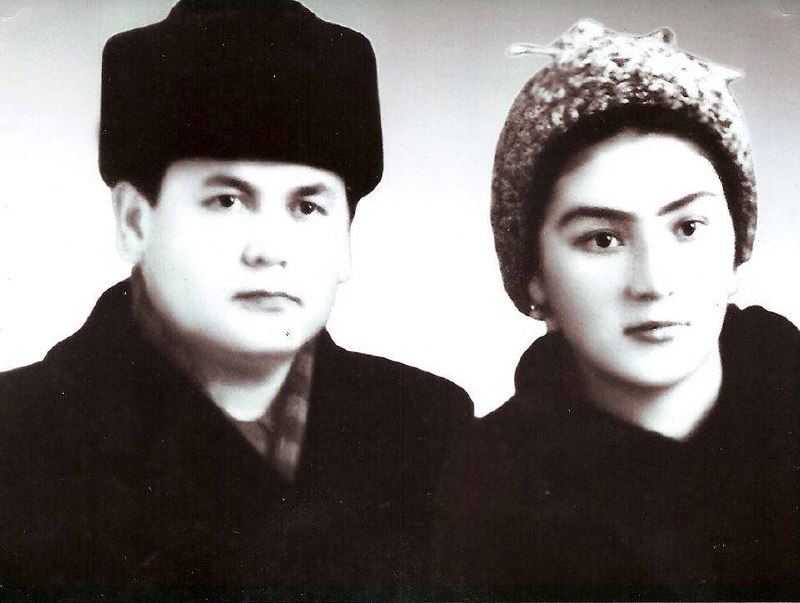
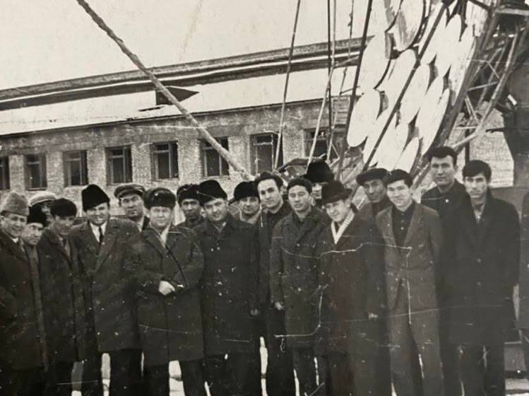
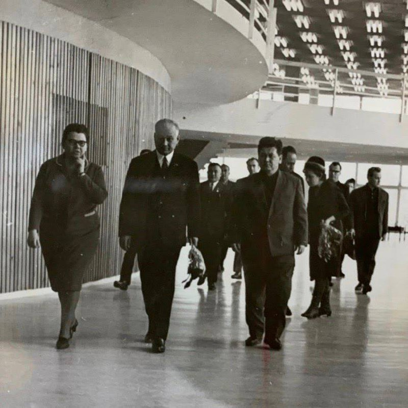
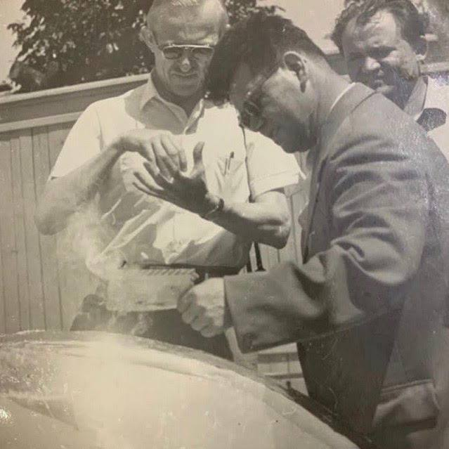
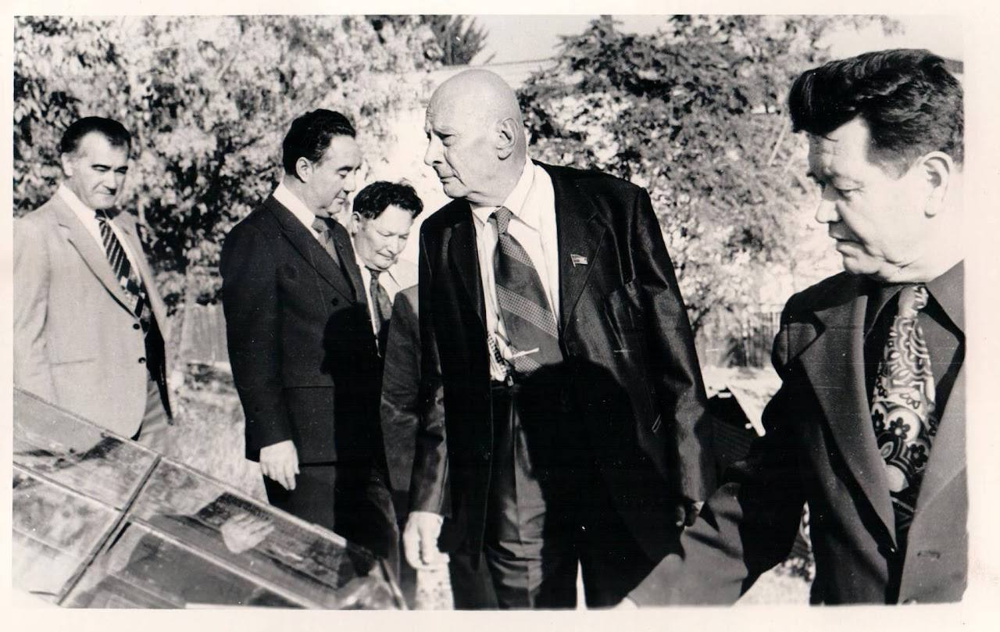
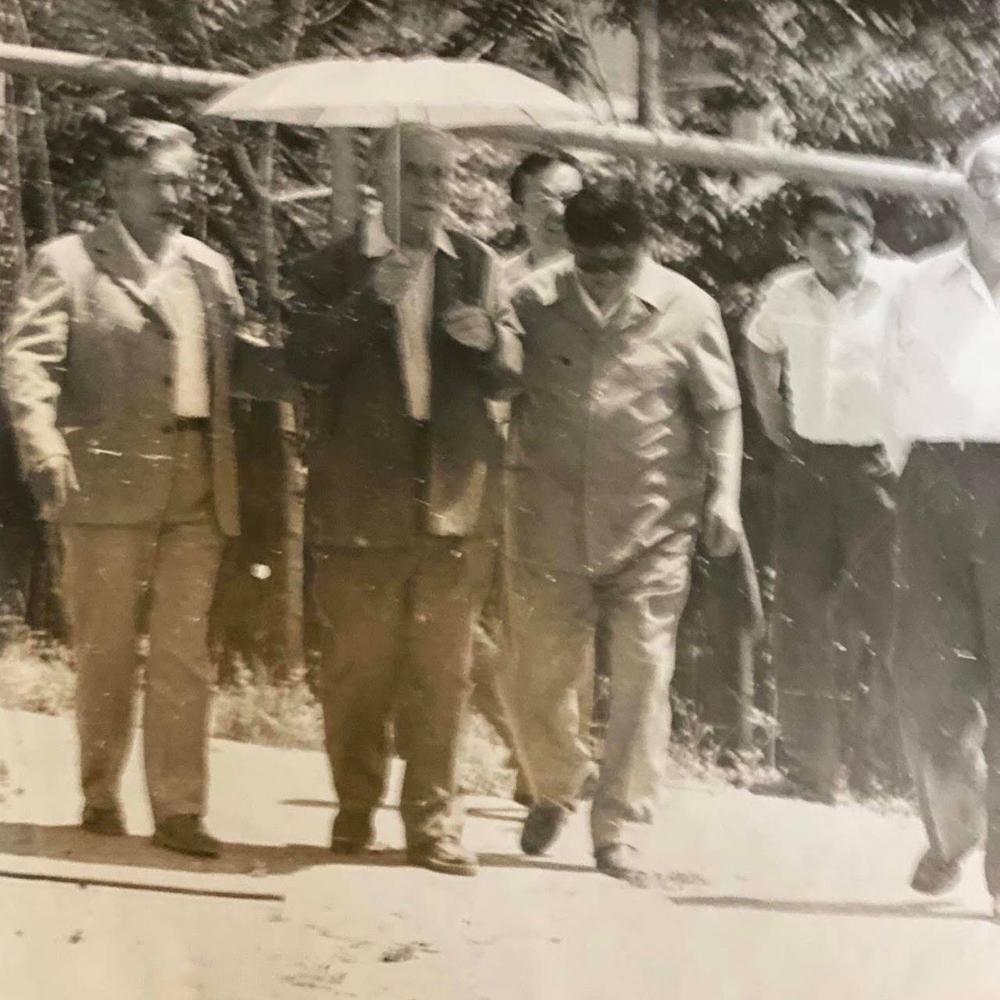
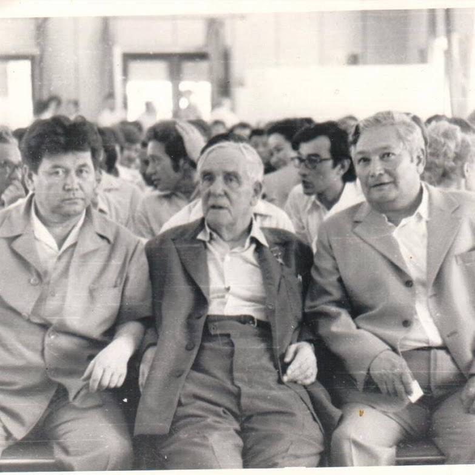
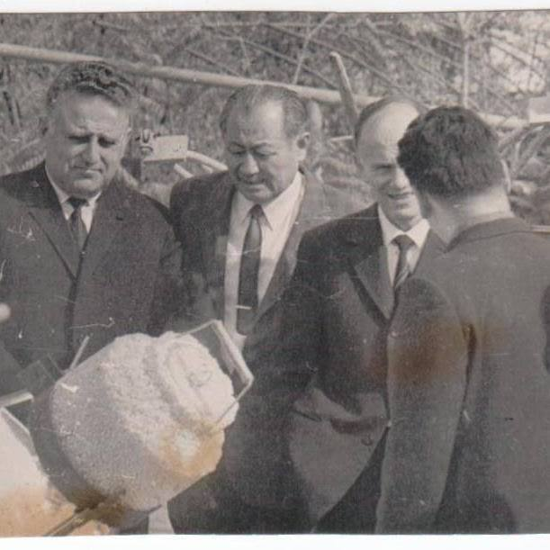
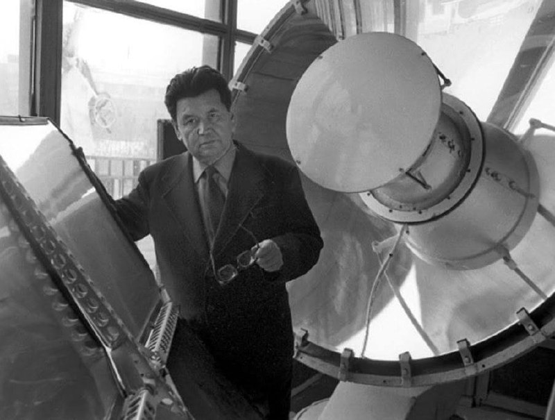

Founder of Heliotechnology in Uzbekistan · Nuclear Physicist · Academician
↓
Biography
The Scientist Who Chose Homeland
Giyas Yakubovich Umarov was a man whose life traced the arc of a nation's scientific awakening. Born in Tashkent on December 25, he rose from a young Uzbek student in postwar Leningrad to become one of the most consequential scientists in Central Asian history — the first candidate of sciences in nuclear physics in all of Uzbekistan, and ultimately the founder of an entirely new field: heliotechnology, the science of harnessing the sun.
His path was marked by a singular conviction: that his homeland needed him more than Moscow's prestigious laboratories did. In 1949, having just defended a brilliant dissertation at Moscow State University — one that saw him debate Lev Landau himself over the mass of the neutrino — he was offered a coveted position in the capital. He declined. He returned to Tashkent, where he would spend the rest of his life building scientific infrastructure where none existed, training generations of researchers, and pursuing a vision of solar energy that the world would only catch up to decades later.
Over a career spanning five decades, he supervised 54 doctoral and candidate dissertations, authored four monographs and over 250 scientific articles, founded the journal Heliotechnika (still published internationally by Springer as Applied Solar Energy), and championed causes from the Large Solar Furnace near Tashkent to the rescue of the Aral Sea. His last scientific work was on maintaining stable plasma equilibrium in a tokamak — a man who, until his final days, dreamed of harnessing the power of plasma and the Sun to improve human life.
1946–1962
The Nuclear Physics Era
1946 — The Vavilov Encounter
The young Giyas Umarov traveled from Tashkent to Leningrad to pursue graduate studies in nuclear physics — a field virtually unknown in Uzbekistan. On the steps of the university, he had a chance meeting with Academician Sergei Ivanovich Vavilov, President of the USSR Academy of Sciences. Vavilov was struck by the young man's determination and personally arranged his admission to the legendary Radium Institute under Academician V.G. Khlopin.
During his first demonstration in Khlopin's laboratory, the equipment malfunctioned — no readings appeared. The young physicist was mortified. Khlopin simply smiled and said: "That's called the Visit Effect" — and accepted him as a graduate student on the spot.
1949 — The Landau Debate
At Moscow State University, Umarov prepared to defend his dissertation on nuclear physics — making him the first candidate of sciences in this field from Uzbekistan. During the pre-defense review, the great Lev Landau challenged his estimate of neutrino mass. The prevailing view placed it at 0.3–0.8 of electron mass. Umarov argued it was no more than 1/50 to 1/100 of the electron's mass — a position far closer to modern understanding.
"The dissertator remained with his opinion, and the opponent with his."
— Lev Landau's review of Umarov's dissertation
The MSU academic council voted unanimously — all 43 members — in Umarov's favor. Decades later, his research on neutrino mass was cited alongside 13 Nobel laureates in Zeldovich and Khlopov's landmark 1981 article in Uspekhi Fizicheskikh Nauk.
1949 — The Choice
Offered a prestigious position in Moscow, the newly minted scientist made the decision that would define his legacy: he returned home to Tashkent. He wanted to build a family and build scientific capacity in his homeland. In the 1950s, he became the first to teach advanced physics in the Uzbek language at the Central Asian Polytechnic Institute.
1957 — JINR Dubna
He organized a group of Uzbek scientists at the Joint Institute for Nuclear Research (JINR) in Dubna — the "Soviet CERN." There he developed a beta-spectrograph on a permanent magnet, work that would lead to his first monograph.
1958 — The Kurchatov Connection
Under the direction of Igor Vasilyevich Kurchatov, the father of the Soviet atomic program, Umarov organized a plasma laboratory at the Physical-Technical Institute in Tashkent. Kurchatov personally arranged for two railway wagons of equipment to be sent from Moscow — an extraordinary gesture of support for frontier science in Central Asia.
Beginning in 1963, Umarov made a dramatic pivot — from nuclear physics to the science of the sun. He recognized that Uzbekistan, blessed with over 300 days of sunshine per year, held the key to a different kind of energy revolution. He founded the Helio Department at the Physical-Technical Institute, comprising four laboratories and a design bureau, and began transforming Tashkent into what colleagues called "the Mecca of heliotechnicians."
The Journal Heliotechnika
He founded the scientific journal Heliotechnika, which became the premier Soviet publication on solar energy. It continues to this day, republished in the United States by Springer as Applied Solar Energy — a lasting testament to the field he created.
UNESCO Paris, 1973
In 1973, Umarov represented the Soviet Union at the UNESCO symposium "The Sun at the Service of Humanity" in Paris. During this trip, he visited the Solar Furnace at Odeillo in the French Pyrenees — an experience that ignited his vision for building something even grander in Uzbekistan. That same year, he published his celebrated book "Biruni, Copernicus, and Modern Science," tracing the deep Central Asian roots of astronomical and heliocentric thought.
The Birthday Presentation
As early as 1954, at an All-Union Conference, Umarov had proposed a tower-type solar power plant with a heliostat field — a design now used worldwide. After seeing Odeillo, he championed a far more ambitious project: a Large Solar Furnace (LSF) for Uzbekistan.
In 1975, he demonstrated the principle to V.A. Kirillin, Chairman of the State Committee for Science and Technology. Then came the decisive moment: a presentation to the Military-Industrial Commission, chaired by D.F. Ustinov (the future Minister of Defense). The date was December 25 — Umarov's birthday.
The result was historic: on May 5, 1976, the CPSU Central Committee and the USSR Council of Ministers adopted a resolution to build the Large Solar Furnace near Tashkent. The LSF was completed in 1987, under the leadership of Academician S.A. Azimov — one of the most powerful solar concentrators in the world, and a monument to Umarov's vision.
In 1971, Rabbimov, Umarov, and Zakhidov published a groundbreaking paper in Geliotekhnika titled "Storage of Solar Energy in a Sandy-Gravel Ground" — introducing the concept of using naturally occurring aquifers as long-term, seasonal reservoirs for thermal energy. This work addressed the fundamental "mismatch problem": solar energy peaks in summer when heating demand is lowest.
Umarov proposed a radical solution: instead of expensive artificial storage tanks, use the Earth itself — the porous rock and trapped water of underground aquifers — as a natural thermal battery. His concept of "unconstructed tanks" eliminated the capital cost barrier that made seasonal storage impractical.
"The initial studies of the possibility of storing hot water in aquifers were proposed in 1971. The early works were by Rabbimov, Umarov, and Zakhidov (1971), and Meyer and Todd (1973)."
— Lawrence Berkeley National Laboratory, Proceedings of the Thermal Energy Storage in Aquifers Workshop (LBL-8431), 1978
Western researchers did not produce comparable work until 1973. The 1978 DOE-sponsored workshop at Lawrence Berkeley National Laboratory formally cited Umarov's 1971 work as the "starting point" for the entire field of ATES — a rare instance of Soviet-Western scientific convergence, with the Soviet work coming first. Today's ATES systems in the Netherlands, Sweden, Germany, and the United States owe their theoretical validity to principles Umarov articulated over fifty years ago.
Umarov's engagement with Stirling engine technology represented a critical bridge between his solar concentrator research and the practical goal of autonomous power generation. The Stirling engine — an external combustion engine that can run on any heat source — was the ideal mechanism for converting concentrated solar thermal energy into electrical output.
Between 1972 and 1978, Umarov published a sustained series of eight papers on Stirling engine optimization, covering heat exchanger design, regenerator efficiency, thermodynamic analysis, and radiative heat discharge. His work directly anticipated the modern dish-Stirling solar power concept — systems like the SES SunCatcher developed in the 2000s operate on the same principles Umarov was optimizing in the 1970s.
Umarov understood that solar energy had to serve not just laboratories but the lives of ordinary people — especially in Uzbekistan's vast agricultural heartland. His applied research bridged physics and farming in ways that were decades ahead of their time:
☀️ Solar Drying — Developed methods for solar drying of agricultural products, reducing dependence on expensive and polluting fuel-based processes.
🌱 Cotton Irradiation — Pioneered pulsed irradiation of cotton seeds and plants to improve yield and accelerate early ripening — critical in Uzbekistan's cotton-dependent economy.
💧 Solar Desalination — Applied solar energy to desalinate water in arid regions, providing clean water where it was most needed.
🎞️ Photo-Destructive Films — Developed photo-destructive polymeric films for mulching cotton fields — biodegradable coverings that harness sunlight itself.
🌾 Ridge-Profiled Cotton Beds — Collaborated with Prof. S.P. Pulatov on ridge-profiled cotton beds for optimized growth.
🌡️ Heated Irrigation Water — In 1988, patented a device for selecting heated water from the upper layers of reservoirs for irrigation — using the sun's natural thermal stratification.
The catastrophic shrinking of the Aral Sea — one of the greatest environmental disasters of the 20th century — was a cause Umarov took deeply personally. As a member of the Committee for Restoration of the Aral Sea, he fought tirelessly to raise the alarm.
He addressed Soviet President Mikhail Gorbachev directly, urging decisive action to save what had once been the world's fourth-largest lake. His letters laid out the ecological, agricultural, and human costs of the Aral's destruction with the rigor of a scientist and the passion of a citizen who loved his land.
Though the Aral Sea's fate would ultimately be one of tragedy, Umarov's advocacy helped lay the groundwork for the international attention and restoration efforts that continue to this day.
Culture & Heritage
Cultural Legacy
The Suzani Connection
In Uzbek culture, the suzani is an ancient embroidered textile whose cosmic motifs — suns, planets, moons, and spirals — represent the concept of falak (the sky). The Umarov family suzani features a large sun at its center, with smaller discs bearing spiral patterns arranged on "orbits" around it. According to legend, the first "sun and moon" suzani was created by the bride of a student of Mirzo Ulugbek, the great 15th-century astronomer-king of Samarkand.
That a nuclear physicist who devoted his life to the sun should come from a family whose most treasured textile depicts the solar system is one of those coincidences that feels like destiny.
Nabira Shamsieva — "The Sun"
Umarov's wife was Nabira Shamsieva (Шамсиева), whose family name derives from Shams — the Arabic and Persian word for "Sun." A man whose life's work was the sun, married to a woman whose very name means the sun, surrounded by a textile that depicts the sun. The poetic resonance is inescapable.
Biruni, Copernicus, and Modern Science
In 1973, Umarov published "Biruni, Copernicus, and Modern Science", exploring the intellectual lineage from the great Central Asian polymath Abu Rayhan al-Biruni through Copernicus to the modern understanding of the cosmos. The book was later translated into English as "At the Crossroads of the Millennium" (2001), making the case that the roots of heliocentric thought run deep through Central Asian soil.
Recognition
Accolades & Recognition
"His research was 50–60 years ahead of its time, and now we see how his bold ideas are being realized. Therefore, we all consider him our mentor."
— Prof. Daniel Alpert (USA), speaking at Davos, 1990
Awards
Order of Honor (USSR)
Medal "For Distinguished Labor"
Honorary diplomas from scientific institutions
Research cited alongside 13 Nobel laureates (Zeldovich & Khlopov, 1981)
Institutional Roles
Member, Scientific Council of USSR Academy of Sciences — "Exploring new ways of using solar energy"
Member, Scientific Council of State Committee for Science and Technology of USSR on energy
Member, Bureau of Central Scientific and Technical Society of Ministry of Energy of USSR
Chairman, Problem Council on Heliotechnics of Academy of Sciences of Uzbek SSR
"Use of Low-Potential Solar Installations" G.Ya. Umarov (1976)
"Theory and Calculation of Heliotechnical Concentrating Systems" G.Ya. Umarov, R.A. Zakhidov, A.A. Vainer (1977)
His biographical book was written by Anatoly Ershov (Moscow, 1996), reissued in the USA in 2001, and is being republished in Uzbek for the centennial anniversary.
Demonstrating the Solar Furnace principle to officials, 1975Nabira Shamsieva with the Umarov family suzaniAcademician Giyas Yakubovich UmarovSolar energy research in UzbekistanLast photo (1988)With a solar concentratorAdjusting solar equipment at the HeliopolygonWith a colleagueWith a fellow scientistFormal portrait with colleague

Giyas Yakubovich with his wife Nabira, 1975

Visit of the President of the USSR Academy of Sciences, academician M.V. Keldysh to the Heliopolygon in Tashkent, 1965

In 1967, on the occasion of the 50th anniversary of the Ukrainian SSR celebration in Kiev, a delegation from Uzbekistan led by Sh.R. Rashidov was in attendance

Nobel Prize laureate P.L. Kapitsa visits the Heliopolygon in Tashkent

President of the National Academy of Sciences of Ukraine, academician B.E. Paton, President of the Academy of Sciences of Uzbekistan, academician U.A. Arifov visit the Heliopolygon

U.S. scientific delegation visited Tashkent in 1975 as part of the Solar Heating and Cooling Demonstration Act of 1974, led by U.S. Senator Frank Moss

Visit of the President of the USSR Academy of Sciences, academician A.P. Alexandrov to the Heliopolygon in Tashkent, early 1980s

In 1975, G.Ya. Umarov demonstrated the Solar Furnace at the Heliopolygon to Academician V.A. Kirillin, Chairman of the State Committee for Science and Technology. Left: N.D. Khudayberdyev, right: A.U. Salimov

Academician G.Ya. Umarov at the Solar Furnace, Heliopolygon, Tashkent
Family
Family Legacy
The scientific tradition Giyas Umarov established did not end with him. His son, Professor G.G. Umarov, continued in the field, co-authoring the memorial text that preserves his father's legacy for future generations. Alongside Academician R.A. Zakhidov — his longtime collaborator and co-author — they ensured that the story of Uzbekistan's solar energy pioneer would not be forgotten.
The Umarov family carries forward not just a name, but a conviction: that science, pursued with integrity and devotion to one's homeland, can change the world. From nuclear physics to the power of the sun, from the laboratories of Leningrad to the solar furnaces of Tashkent, the legacy of Giyas Yakubovich Umarov endures — in the institutions he built, the students he trained, the journal that still bears his vision, and the family that carries his name.